UDN
Search public documentation:
DevelopmentKitGemsInteriorMapping
日本語訳
中国翻译
한국어
Interested in the Unreal Engine?
Visit the Unreal Technology site.
Looking for jobs and company info?
Check out the Epic games site.
Questions about support via UDN?
Contact the UDN Staff
中国翻译
한국어
Interested in the Unreal Engine?
Visit the Unreal Technology site.
Looking for jobs and company info?
Check out the Epic games site.
Questions about support via UDN?
Contact the UDN Staff
UE3 Home > Unreal Development Kit Gems > Interior mapping
Interior mapping
Last tested against UDK August, 2011
PC compatible
Overview
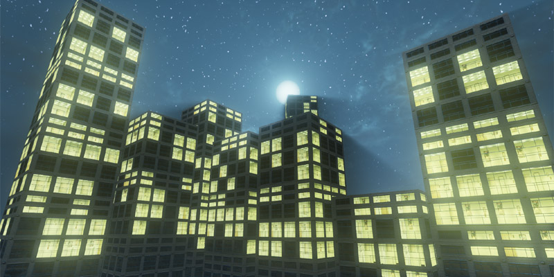 Interior mapping is a technique developed by Joost van Dongen. Original documentation can be found here. Interior mapping is a technique which creates virtual perspective correct textured rooms on flat surfaces. This technique enhances buildings so that you can quickly add buildings into your scene without having to spend a lot of time modeling all of the interiors. By using textures and expanding this material you could also incorporate dynamic responses to day time to night time transitions or use animating textures on the virtual walls and or floors.
Building the material
The material was constructed based of the Cg program that van Dongen wrote. However some CG specific instructions was expanded and translated to use UDK specific commands. An example of such a function is the step function. This is made in UDK like so. 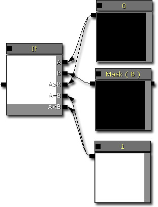 Cg functions like these can be created as material functions.
Ray tracing pass
Much like the parallax occluded mapping technique, this technique also uses ray tracing to find texture coordinates to use when rendering the material surface. All Vector Transforms transform from World to Local. The ray tracing pass is done like this: 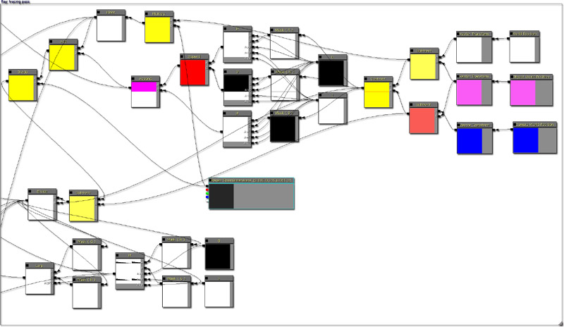Ceiling and floor texture pass
After the ray tracing is done, the next step is the ceiling and floor texture pass. As both the ceiling and the floor has the same texture coordinates, which one gets rendered is decided based on whether or not the texel is below the horizon in relation to the camera or not. 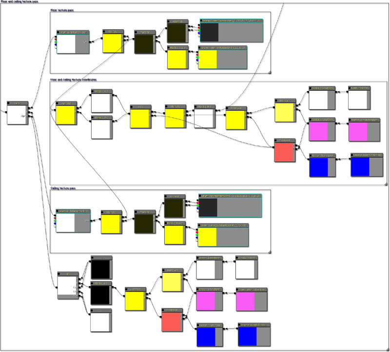Wall texture passes
There are two types of walls in this material, one for the X axis and one for the Y axis. The texture calculations is the same both except that different texture coordinates based on the ray cast intersections are used. Two different types of texture calculations are available for level designers to use. One uses a texture atlas method which randomizes what wall texture to use, which is more expensive but is visually more interesting. The other method is simpler as it just uses a single texture for each wall. 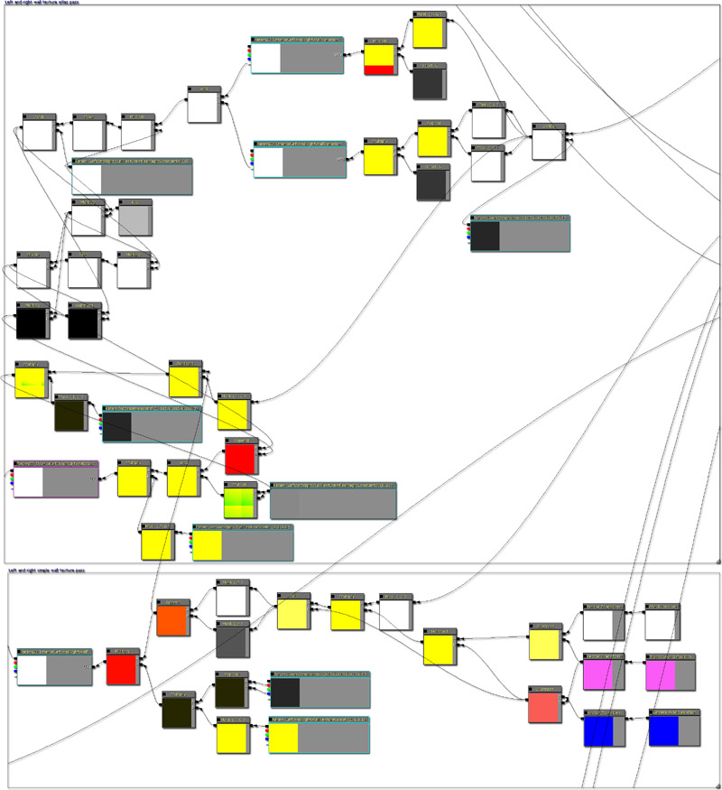Lighting pass
The lighting pass simply involves building the normal maps for the three sides and then calculating the dot product with a static light direction. A multiplier parameter and a additional parameter are added to allow level designers to further tweak the lighting. 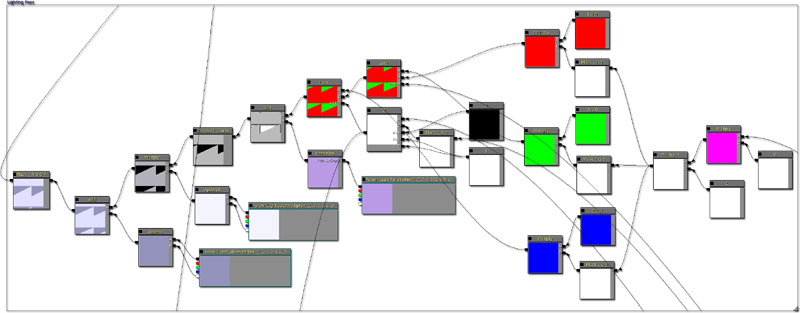Light variation pass
The light variation pass generated a noise sample for each room. Using a threshold then allows you either have a light on or off. This allows you to create extra variation so that buildings can look more interesting. Using different thresholds would allow you to have different lights at different intensities or to have other lighting effects such as flickering lights. 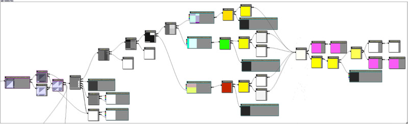Normal pass
The normal pass is used for the outside wall, so it's set up as you would for any other material. Included is detail normal mapping, a normal adjustment for the glass reflection. This is to give a wobbly reflection instead of a perfect reflection. 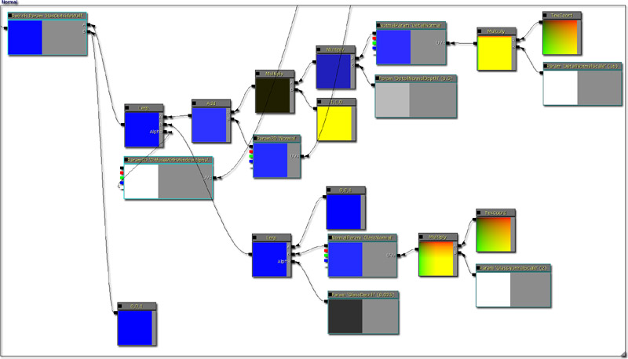Specular and Specular Power pass
The specular and specular power pass is used for for the outside wall, so it's set up as you would for any other material. This has been set up so that the bricks have a higher specular power value than the windows. 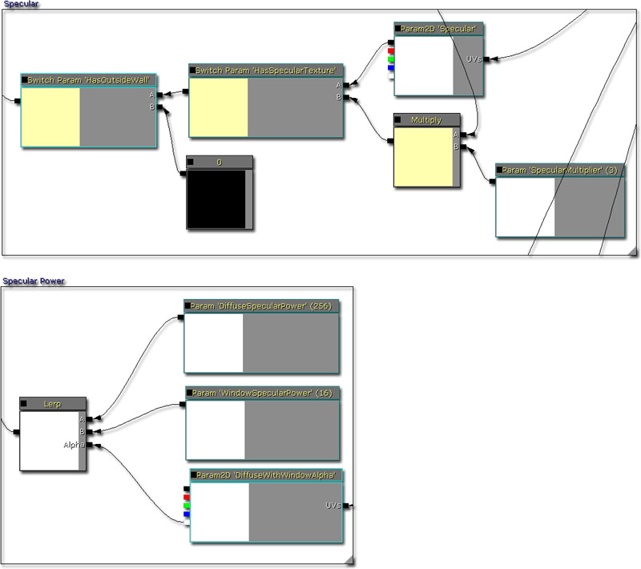Emissive and interior pass
The emissive pass is used for rendering the interior pass generated by the ceiling and floor, wall, lighting and lighting variation pass. If you were to free up a texture sampler, you could also use an emissive texture for the outside wall. 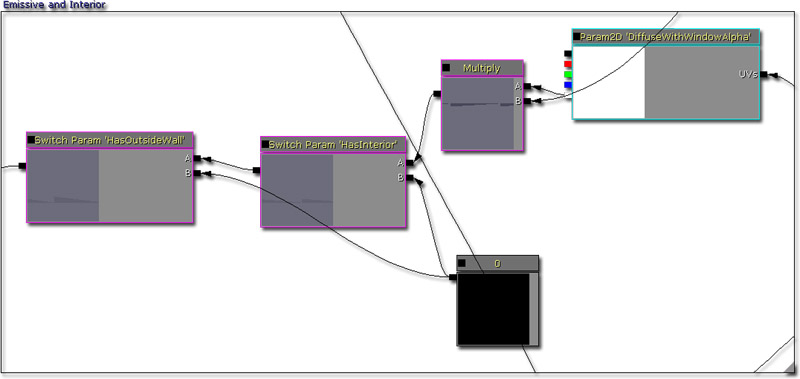Diffuse pass
The diffuse pass is used for for the outside wall, so it's set up as you would for any other material. 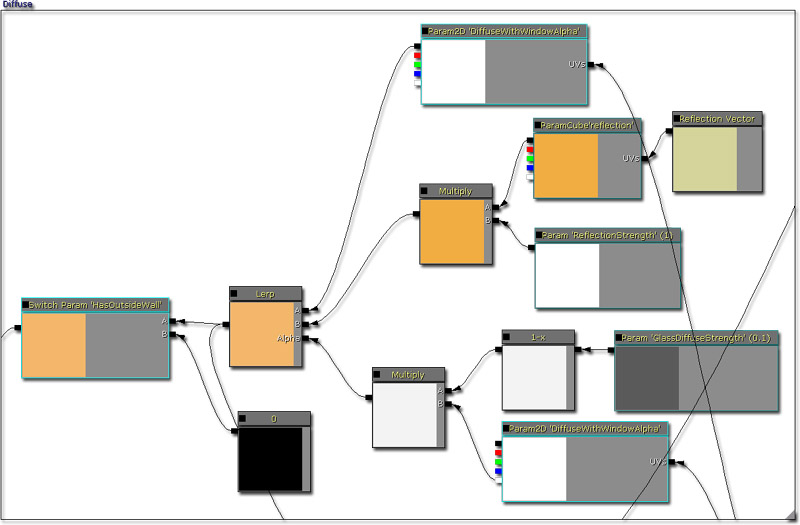Diffuse, specular and normal texture scaler
The diffuse, specular and normal texture scaler is to allow the level design to scale the textures so that they match the number of rooms set by RoomDimensions. 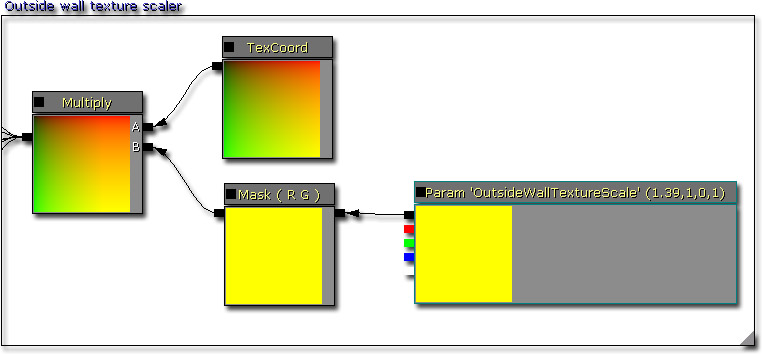Completed material
Bringing it altogether and you wind up with a material like this. 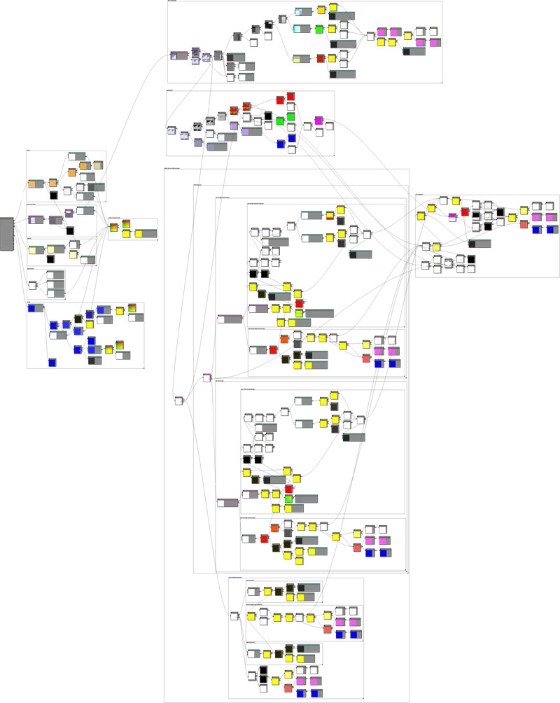Material parameters
Here is a list of the parameters and what they do.
- BackWallTextureScale - This allows you to scale one of the walls texture coordinates.
- CeilingTextureScale - This allows you to scale the ceiling texture coordinates.
- FloorTextureScale - This allows you to scale the floor texture coordinates.
- LeftAndRightWallTextureScale - This allows you to scale one of the walls texture coordinates.
- LightColorAddition - This allows you to add to the overall lighting result. If the light value goes over 1.f, then the rest is forwarded to the bloom factor.
- LightColorMultiplier - This allows you multiply to the overall lighting result. If the light value goes over 1.f, then the rest is forwarded to the bloom factor.
- LightParameterA - This defines the interior light direction.
- MaxLightColor - This is the maximum color that the light result can be.
- MinLightColor - This is the minimum color that the light result can be.
- OutsideWallTextureScale - This allows you to scale the outside wall textures.
- RoomDimensions - This allows you to adjust how large the rooms are. If the rooms are smaller, than more rooms will be created.
- BackTextureAtlasMagicConstantA - Tweak this magical constant when using texture atlases to align the texture coordinates.
- BackTextureAtlasMagicConstantB - Tweak this magical constant when using texture atlases to align the texture coordinates.
- DetailNormalDepth - This allows you to adjust the depth of the detail normal. A higher value makes the detail normal more prominent.
- DetailNormalScale - This allows you to adjust the scale of the detail normal.
- DiffuseSpecularPower - This allows you to adjust the diffuse specular power value.
- GlassDepth - This allows you to adjust how strong the glass normal is, making reflection bending stronger or weaker.
- GlassDiffuseStrength - This allows you to adjust how strong the glass diffuse is.
- GlassNormalScale - This allows you to scale the glass normal.
- InteriorLightingVariationTextureScale - This allows you to adjust the interior lighting variation texture scale.
- LeftAndRightWallTextureAtlasMagicConstantA - Tweak this magical constant when using texture atlases to align the texture coordinates.
- LeftAndRightWallTextureAtlasMagicConstantB - Tweak this magical constant when using texture atlases to align the texture coordinates.
- LightVariationThreshold - This allows you adjust the threshold for whether a light is turned on or off depending on the noise variation pass.
- ReflectionStrength - This allows you to adjust how strong the reflection is.
- SpecularMultiplier - This allows you to increase how strong the specular is.
- WindowSpecularPower - This allows you to adjust the specular power for the windows.
- DetailNormal - This is the texture used for the detail normal.
- DiffuseWithWindowAlpha - This is the texture used for the outside wall. The alpha channel is used as a mask for which areas are the window and the outside wall.
- GlassNormal - This is the texture used for the glass normal.
- InteriorBackWall - This is the texture used for one of the walls.
- InteriorBackWallAtlas - This is the texture used for one of the walls when using the texture atlas pass.
- InteriorBackWallVariation - This is the texture used for varying the texture atlas.
- InteriorCeiling - This is the texture used for the ceiling.
- InteriorFloor - This is the texture used for the floor.
- InteriorLeftAndRightWall - This is the texture used for one of the walls.
- InteriorLeftAndRightWallAtlas - This is the texture used for one of the walls when using the texture atlas pass.
- InteriorLeftAndRightWallVariation - This is the texture used for varying the texture atlas.
- InteriorLightingVariation - This is the texture used for varying the lighting.
- Normal - This is the texture used for the normal.
- Reflection - This is the cube map texture used for the reflection.
- Specular - This is the texture used for the specular.
- Has Light Variations - Switch used to control whether the material uses the light variation pass or not.
- Has Interior - Switch used to control whether the material uses the interior pass or not.
- Has Outside Wall - Switch used to control whether the material uses the Diffuse, Specular, Specular Power and Normal pass or not.
- Has Specular Texture - Switch used to control whether the material uses a texture for specular or not.
- Use Texture Atlas For Back Wall - Switch used to control whether the material uses the texture atlas pass or not.
- Use Texture Atlas for Left And Right Wall - Switch used to control whether the material uses the texture atlas pass or not.
Comparision screen shots
Here is a screen shot with interior mapping on. With the interior rooms created, it adds more detail to the scene with very little extra work required. 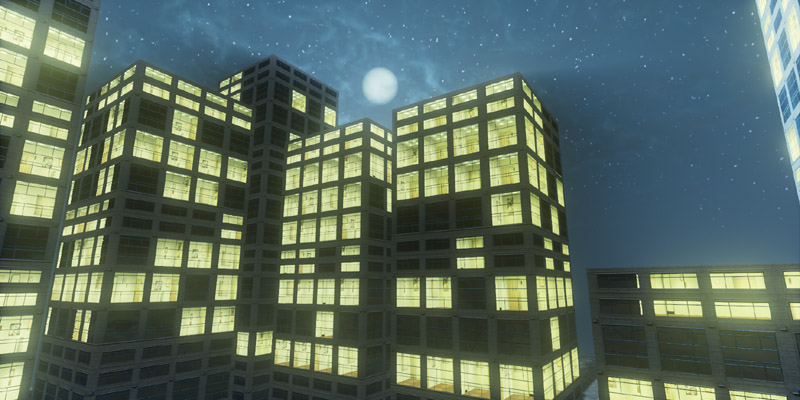 Here is a screen shot with interior mapping off. It's possible to use the light variation pass to turn some of the lights on, but it still doesn't really add the necessary depth that the interior mapping adds. 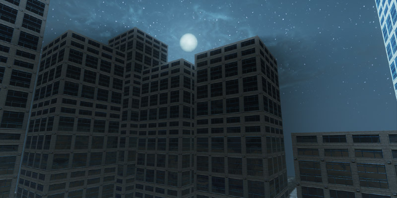
Downloads
- Download the content used in this development kit gem.

{kind=link}
{kind=link}
{kind=link}
{kind=link}
{kind=link}
{kind=link}
{kind=link}
{kind=link}
{kind=link}
{kind=link}